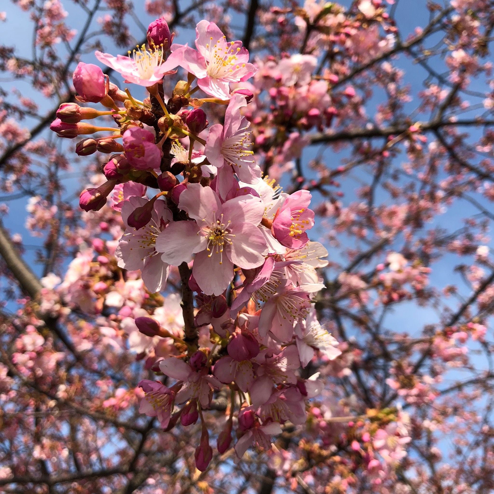
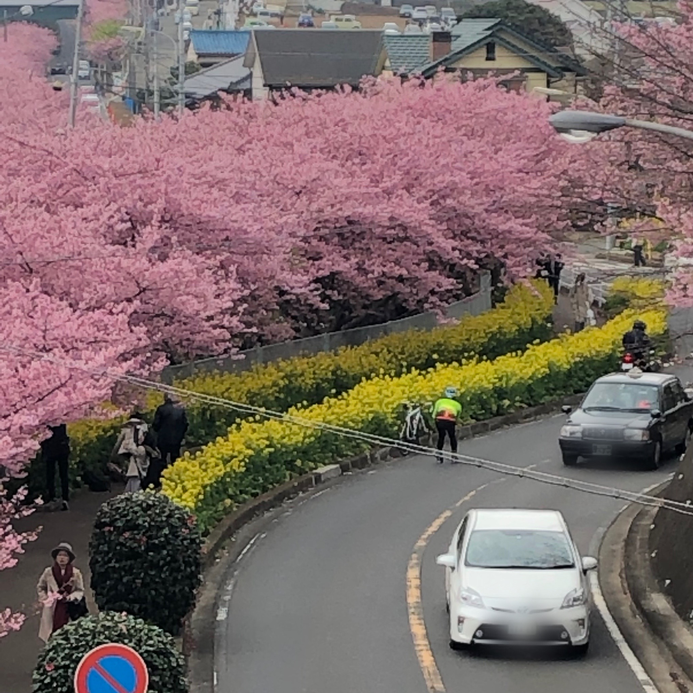

河津桜

「河津桜」は、例年2月初旬から楽しめる早咲きの桜で、 開花から落花まで約1ヶ月と長いこと、ピンク色の鮮やかな花を咲かせることが特徴です。 三浦海岸駅～三崎口駅間の線路沿いには、約1000本の河津桜が植えられていて、お花見の名所としても有名。 毎年地元では「三浦海岸桜まつり」が開催され、期間中三浦海岸駅前にはテント村も出店され、春の風物詩となっています。
菜の花とコラボ

三浦海岸駅から徒歩約10分程の線路沿いには、菜の花も咲き、 ピンクと黄色のコントラストが綺麗なフォトスポットです。